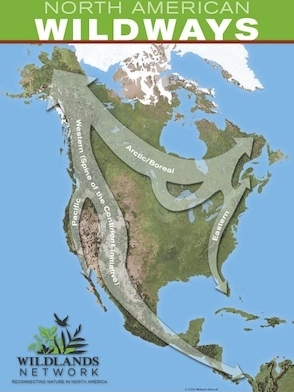

The Wildlands Project
Anybody who loves animals will be interested in this visionary project
that will protect North America's wildlife. It is called the WILDLANDS
PROJECT and it is about the creation of safe corridors for animals
throughout the continent. There are four proposed corridors (wildways)
three of them running North-South and one going East-West.
What is envisioned is an Eastern Wildway passing through the
Appalachians, a mid-continental corridor running through the Rocky
Mountains, an Arctic-Boreal corridor running through much of Alaska and
Canada and a Pacific Wildway traversing the Sierra Nevada and
Cascades.
Here is a map showing the corridors that we are creating:

It is not accidental that the three North-South corridors run along the
main mountain ranges in North America. This is where the majority of
large wild animals still live and where the human population is
thinnest. It is along these corridors that we will protect the animals
by giving them the ability to travel in safety.
The current patchwork of unconnected parks does not allow the animals to
seasonally migrate to find mates and preserve genetic diversity. Nor
does it allow them to respond to the challenge of climate change which
is necessitating mass migrations to new habitat and adding urgency to
this essential project.
What we presently have are scattered parks and wilderness areas but they
are not connected or, if they are, the connections are too narrow to
serve as passage ways. Because of this, many hazards confront the
animals as they travel between places where they can find sanctuary.
There are freeways and busy highways as well as fences and areas cleared
for logging or development. There are impassable walls at the Mexican
border. How are the animals to navigate all these dangers?
Wildways would provide safe passageway by providing continuous protected
wildlands. These will be made up of national parks, state parks,
wilderness areas, land trusts, and conservation easements from private
landowners who care about the environment.
The greatest innovation of this project is the realization that the
animals need a continuous, connected safe passage. Protected areas have
to connect or they can't serve as corridors. We can also assist the
animals by creating spaced wildlife overpasses or underpasses across the
major highways. Such overpasses already exist in Canada and Europe and
they are beautiful! The following links will show you such
overpasses:
Alberta Story Wildlife Crossing In Banff
Animal Overpasses In Banff National Park Proven To Work
What are the practical implications of this for those of us who love
animals and want to protect wildlife?
First, we need to make our legislators aware of the Wildlands Project so
they will know that there is an overall plan, a vision.
Third, we will have to redefine "multi-use". This is a contentious
subject in the management of state and national parks. We will need to
define "multi-use" along the corridors in a way that is animal friendly.
Park signs often say "land of many uses" but what does that mean? Is
hunting allowed in the park? Snowmobiling? Fishing? All Terrain
vehicles? Mining? Logging?
Fourth, we can speak to others about this project and suggest it to
students and teachers as an important subject for school
presentations.
In all of the years that I have done environmental work I have never
been so excited about a project because this is a large bore answer to a
large scale problem. The Wildlands Project is not a timid answer. It is
multi-generational and it is worth doing, for us, for the generations to
follow and most of all for the animals themselves. They don't want much
- just the ability to live in peace.
Here is a link that will give you more information on the Wildways and
the Wildlands Network that is working to create them:
- Larry